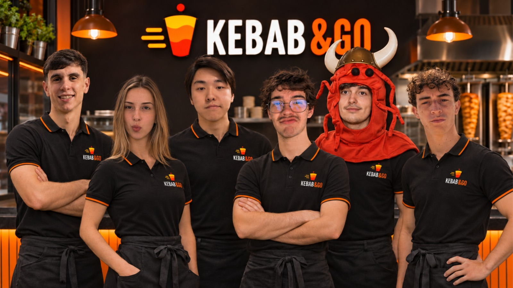

Menos vueltas, más kebab
Elige tu pedido en uno de los kebabs de tu zona y compara cuánto te cuesta recogerlo en el local o pedirlo por Glovo, Uber Eats y Just Eat.
Se tarda mucho en buscar kebabs que sean buenos y a un precio justo.
No es fácil saber qué locales son confiables y rápìdos.
Se termina pagando más y recibiendo menos de lo esperado.
Concentramos datos de locales, precios y calidad en una sola app.
Facilitamos la elección rápida y segura para el usuario.
Ahorra tiempo y dinero eligiendo solo las mejores opciones.
CONOCE EL PROYECTO
En un minuto descubrirás cómo Kebab & Go ayuda a comparar sin saltar de una aplicación a otra.

Prueba nuestra demo y descubre cuánto cambia el precio según cómo lo pidas.
Compara tu pedido: recoger en local vs. apps de reparto